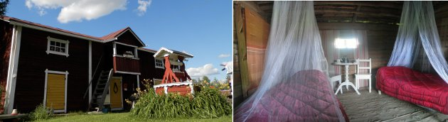
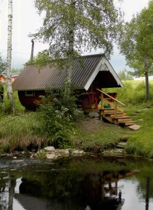
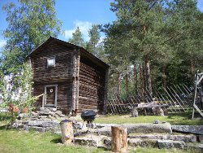

Majoituskohteet
Vieraskammarit
Koski-Tuurin Kammareiden neljä vieraskammaria sijaitsevat Koski-Tuurin
päärakennuksen yläkerrassa ja ovat ympärivuotisessa käytössä.
Vieraskammareihin majoittuvilla ovat käytössä yläkerran wc, tv,
sohvakalusto, parveke sekä takka. Suihku ja sauna löytyvät alakerrasta yleisistä tiloista.
Vieraskammareista Renginkammari on yhden hengen huone, Vihiriä kammari, Punaanen kammari sekä Tyttären kammari ovat kahden hengen huoneita.
Kaikki sisätilat ovat savuttomia. Lemmikit eivät ole sallittuja näihin huoneisiin. Liikuntaesteisten kulku majoitustiloihin yläkertaan voi olla hankalaa rappusista johtuen.
VIHIRIÄ KAMMARI
Vihiriä kammari sijaitsee päärakennuksen yläkerrassa.
Se on kooltaan 19m² ja ikkunoista
on näkymät sivu- ja takapihalle sekä pelloille lampaiden ja hiehojen aitauksiin.
Kammarissa on erillään kaksi sänkyä (200cm x 80cm),
jotka voi halutessaan yhdistää.
Tarvittaessa löytyy patjoja ja petivaatteet, mikäli haluaa pienenä porukkana majoittua samaan tilaan.
Huoneessa on oma televisio, sohvakalusto ja pöytä.
PUNAANEN KAMMARI
Punaisen Kammarin löytää päärakennuksen yläkerrasta.
Se on kahden hengen huone, joka on kooltaan 13m².
Huoneesta on näkymä pelloille, jossa voi nähdä kesäisin lampaiden ja hiehojen elämää.
Toisesta ikkunasta näkee toisen luttirakennuksista sekä osan etupihaa.
Huoneessa on parisänky (200cm x 120cm).
Nojatuoliin voi istahtaa kaikessa rauhassa ja lukea vaikka kirjaa.
RENGIN KAMMARI

Tämä pikkuinen yhden hengen huone sijaitsee päärakennuksen yläkerrassa aulan takana.
Se on kooltaan 7m². Huoneessa on yksi sänky (200cm x 80cm)
Aulan oleskelutilassa voi katsoa tv.tä ja talvella istua takkatulen ääressä.
Oleskelutilasta on pääsy parvekkeelle.
Wc löytyy aulasta, heti portaikon vierestä.
TYTTÄREN KAMMARI
Tyttären kammari sijaitsee päärakennuksen yläkerrassa.
Se on kahden hengen huone, joka on kooltaan 12m².
Tämä huone on ihanan valoisa, vaikkei se olekkaan kooltaan kovin suuri.
Ikkunasta voi katsella kesäisin
lampaiden elämää aitauksessaan.
Huoneessa on parisänky (200cm x 120cm).
HUONEISTO
Koski-Tuurin kammareiden huoneisto sijaitsee päärakennuksen alakerrassa. Tiloihin on oma sisäänkäynti talon oikean oven
puolelta.
Liikuntarajoitteisten kulku majoitustilaan voi olla hankalaa sisäänkäynnin portaista sekä kynnyksistä johtuen. Lemmikit
ovat sallittuja.
Huoneisto on kooltaan 40m², jossa on keittiö, vessa ja makuu-/olohuone. Makuutilaa on kuudelle ja lisäpeteihin on
myös mahdollisuus. Tarvittaessa kammareilla on käytettävissä myös lasten retkisänky.
Kaikki tilat ovat savuttomia.
Suihku- ja saunatilat ovat yhteiset isäntäväen kanssa. Suihkutilan
käytävästä on läpikäynti isäntäväen luokse.
HUONEISTON KEITTIÖ
Huoneiston keittiöstä löytyy normaali varustelutaso.
Kaapeista ja laatikoista löytyvät aterimet,
astiat, kattilat yms.
Keittiössä on:
-Ruokailuryhmä neljälle hengelle
-Lasten syöttötuoli (löytyy eteiskäytävästä)
-Sähköhella, mikro, leivänpaahdin, jääkaappi pakastinlokerolla, kahvin- ja vedenkeitin
-Levitettävä sohva
Eteiskäytävällä on arkkupakastin, jota voi tarvittaessa käyttää emännän luvalla.
WC
-käsipyyhkeet
-käsisuihku
HUONEISTON MAKUU-/OLOHUONE

Huoneiston makuu-/olohuoneesta on näkymät sivu- ja takapihalle.
Makuu-/olohuoneessa on parisänky (200cm x 180cm).
Yöpöydän ala-osasta löytyy satukirjoja perheen pienimmille.
Huoneessa on televisio ja Dvd-soitin sekä sohvakalusto ja sohvapöytä.
KAMMAREIDEN KESÄKAUDEN MAJOITUS
Koski-Tuurin kammareissa on mahdollista majoittua kesäkaudella Pikkumökissä,
Luttimajoituksessa sekä Piilokammarissa. Myös omalla teltalla tai asunto-autolla on mahdollista
tulla majoittumaan kammareiden pihapiiriin.
Majoittujien käytettävissä on pihavessa
joka löytyy tien vierestä renginlutin päädystä. Se on normaali vesivessa, jossa on tavalliset wc-tilat.
Ulkona renginlutin edustalla on myös jääkaappi, joka on majoituskäyttöön. Grillata voi ulkona grillissä ja
kammareilta saa tähän tarvittavat hiilet ja sytytysnesteen.
PIKKUMÖKKI
Pikkumökki on sähköistetty terassillinen pihamökki.
Se löytyy päärakennuksen taka-pihalta.
Tämä kahden hengen huone on kooltaan 10m² ja sen on sallittu lemmikeille.
Mökissä on parisänky (200cm x 120cm) ja televisio.
Terassin edessä grillaus mahdollisuuus.
LUTTIMAJOITUS

Lutit on säilytetty alkuperäisinä ja luttikammareita on kaksi,
Piianlutti sekä Renginlutti.
Majoitustilat löytyvät luttien yläkerrasta.
Valitettavasti liikuntarajoitteisille majoitustila voi
olla hankala rapuista johtuen.
Lemmikit ovat lutteihin sallittuja, ottaen kuitenkin huomioon jyrkät rappuset.
Sisätiloissa ei saa tupakoida.
Kummassakin luttikammarissa on sängyt kahdelle ja lisävuode. Lisäpetiin on myös mahdollisuus.
Luteissa ei ole sähköä mutta pieni ikkuna tuo tunnelmallista valoa ja lisäksi kynttilöillä saa aikaan romanttisen
valaistuksen.
Isäntäväeltä saa halutessaan retkilyhdyn luttimajoitukseen.
Yleistä tietoa luhtiaitoista eli pohjalaisittain luteista
Pihan lutit valmistuivat 1890, jolloin ne toimivat piikojen ja renkien kesäasuntoina. Lutteja pidettiin myös
käsityöaittoina, joissa oli tilaa kutoa mattoja ja valmistaa ryijyjä. Talon naisväellä oli tapana koristaa luttikammarit käsitöillään.
PIILOKAMMARI
Piilokammari on kaksikerroksinen Koski-Tuurin entinen vilja-aitta, joka on kunnostettu kesäkauden majoitustiloiksi.
Se sijaitsee Koski-Tuurin mäellä noin 70 metrin etäisyydellä päärakennuksesta.
Piilokammarin viereen pääsee autolla.
Liikuntarajoitteisten kulku majoitustilaan voi olla hankala sisäänkäynnin kiviportaista sekä sisärapuista johtuen.
Lemmikit ovat Piilokammariin sallittuja.
Piilokammarissa ei ole sähköä. Tunnelmallista valoa tuo kammarin alakerran
ikkuna sekä yläkerran pikkuruinen ikkuna. Kynttilät tuovat valoa ja Isäntäväeltä saa halutessaan retkilyhdyn. Jääkaappi
piilokammarin pihalla on majoittujien käytettävissä. Samoin pallogrilli. Erillinen puuvessa löytyy Piilokammarin vierestä,
mutta renginlutin viereistä vesivessaa voi myös käyttää.
Piilokammarin alakerrassa on:
- talonpoikaissänky (190cm x 87cm)
- pirttisohva (183cm x 60cm)
- pöytä ja kolme tuolia
- keinutuoli
Piilokammarin yläkertaan on sijoitettuna kaksi sänkyä sekä patja. Kahden makuupaikan ylle saa hyönteisverkon.
- Talonpoikaissänky (185cm x 96cm)
- Parisänky (200cm x 160cm)
Varaaminen
Soita ja varaa majoitus:
Puh. 06-5125107
Mob. 040-8497914
(Ma-Su 8:00-21:00)
Kaarina Koski-Tuuri
Tuurinkyläntie 101
63610 Tuuri
Saapumispäivänä ilmoittautuminen
viimeistään klo 17:00.
Ilmoitattehan jos aiotte peruuttaa varauksenne.

